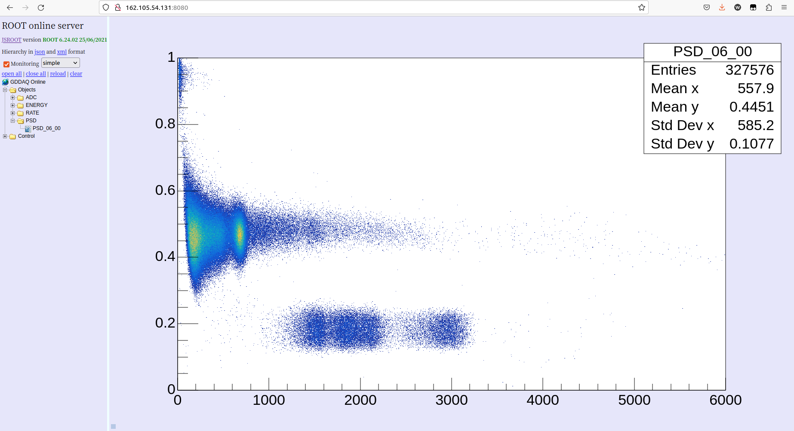

在线统计
基于 ROOT 的图形界面
通过执行以下命令，开启在线监视主界面：
./online
点击 RunStart 则开启在线监视，在线监视每 3 秒刷新一次。可时时监视每路的触发率、每路的实际事件输出率。
监视界面如下：

在 “Alert” 界面用户可以设置每个通道触发率的上限以及下限，当触发率低于设置的下限或者高于设置的上限，则该通道的数值将会变成蓝色和红色。
在“EnergyMonitor”界面用户可以浏览每个通道的能谱。
基于 ROOT HTTP 在线监视
本程序可以实时查看各个通道的原始能谱、刻度之后的能谱以及粒子鉴别图等信息。每个模块的数据每 5MB 刷新一次，在开启本程序之后，还得选中 GUI 界面的选项 Decoder ，网页版在线监视功能才能正常使用。如果未开启本程序而选中 GUI 界面的选项 Decoder ，则 DAQ 将在模块数据达到 5MB 时等待数据发送，不再进行数据采集传输。
使用本程序需要进行一定的参数配置，建议对本程序比较熟悉的人使用。
通过执行以下命令，开启 ROOT HTTP 在线监视主界面：
./httponline
# 需要保持本程序运行！！！！！！
# 终端会显示 HTTP server port，例如 8080
启动程序之后，在浏览器中访问 xxx.xxx.xxx.xxx:port，例如 192.168.1.33:8080。进入网页会自动弹出登陆对话框，访客用户名为 guest，密码为空，不需要填写。最高权限用户名为 admin,密码为 admin, 该账号能够关闭本程序，因此实验中不建议使用最高权限用户。
执行以上文件前，需要配置参数文件 par.dat 和 psd.dat。
par.dat 文件中，第一列为 sid； 第二列为 ch； 第三列 1 表示显示该通道的能谱，0 表示不显示该通道的能谱；第四列、第五列、第六列表示刻度之后 TH1 能谱的 bin 数，最小值，最大值；第七列、第八列、第九列分别为刻度系数零次项、一次项和二次项。如果刻度系数均为 0.0，则该通道的刻度能谱将时空白。如果采用线性刻度，则二次项为 0.0。
psd.dat 文件中，第一列为 sid； 第二列为 ch； 第三列 1 表示显示该通道的 PSD，0 表示不显示该通道的PSD； PSD 图横坐标为原始能量道址，纵坐标为 PSD(短门积分比上长门积分)，因此第四到第九列分别为 X/Y 轴的参数； QDC 能够提供 8 段积分，这里只使用前三段积分，Q0为基线积分，Q1为短门积分，Q1+Q2 为长门积分。PSD 计算公式为 (Q1-Q0xL1/L0)/(Q1+Q2-Q0xL1/L0-Q0xL2/L0), 第十和第十一列参数用于扣除短门和长门积分中的基线。
PSD 监视界面如下：
基于网页的图形界面
使用本程序的前提是安装 MYSQL 数据库。关于如何安装及设置数据库，请查看相对应的章节。本程序针对特定大实验开发，单一用户不建议使用

在 mysql 目录下有两个子目录，分别为 createdb 和 online。
createdb
修改 mysql/createdb/UserDefine.hh 文件中的数据库参数，该信息包括数据库的 IP，拥有创建数据库的用户名和密码。
#define HOST_NAME "222.29.111.140"
#define USER_NAME "admin"
#define USER_PASSWD "xia17pxn"
然后运行以下命令编译程序：
cd mysql/createdb
make clean
make
编译完成将生成可执行文件 createdb ，执行该程序，将创建数据库以及相应的表。需要注意的是，每次执行该程序，将会删除原有的数据库然后重新创建。
online
修改 mysql/online/UserDefine.hh 文件中的数据库参数，该信息包括数据库的 IP，拥有能够对数据库进行写入、更新权限的用户名和密码。
#define HOST_NAME "222.29.111.140"
#define USER_NAME "data"
#define USER_PASSWD "xia17pxn"
然后运行以下命令编译程序：
cd mysql/online
make clean
make
编译完成将生成可执行文件 onlinedb ，执行该程序，将周期性读取共享内存中的数据，并写入到数据库中。本程序需要始终运行。